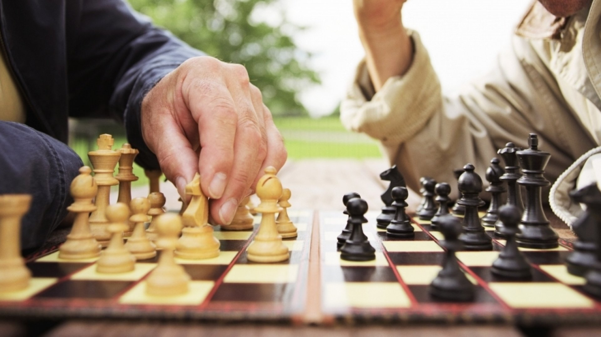

So You Want to Learn Chess?
Well You Came to The Right Place!
Hello there! You have arrived at the ultimate website for learning the great game of chess. Whatever your level, from beginner to advanced, you've come to the right place. Chess is a strategy game, involving careful planning, strategic thinking, and analysis. This website will teach you this timeless game, whatever your level, starting with basic rules and then guiding you through the three stages of the game, with basic strategies for each. So whether you're new to the game, or just looking to brush up on your game, you've come to the right place. Let's get started!

Sections
There are four main sections to this website, each of which can be accessed through the menu at the top of the page. If you're new to the game, I would recommend going through them in order, but if theres a specific area of your game you're looking to improve you can look at any section. The four sections are as follows:
Rules: This section teaches the basic rules of the game, from the board setup to the moves of each of the pieces, as well as the objective of the game.
Opening: This section teaches about the opening, which is the first five to ten moves of the game, and shows some opening traps.
Midgame: This section teaches about the midgame, which is the majority of most games. It shows various tactics and attacks, as well as things to watch out for.
Endgame: This section teaches about the endgame, the section after the majority of the major pieces are gone. It shows endgame tactics, as well as various types of checkmates.
Coded By: Finn Cullen 2023